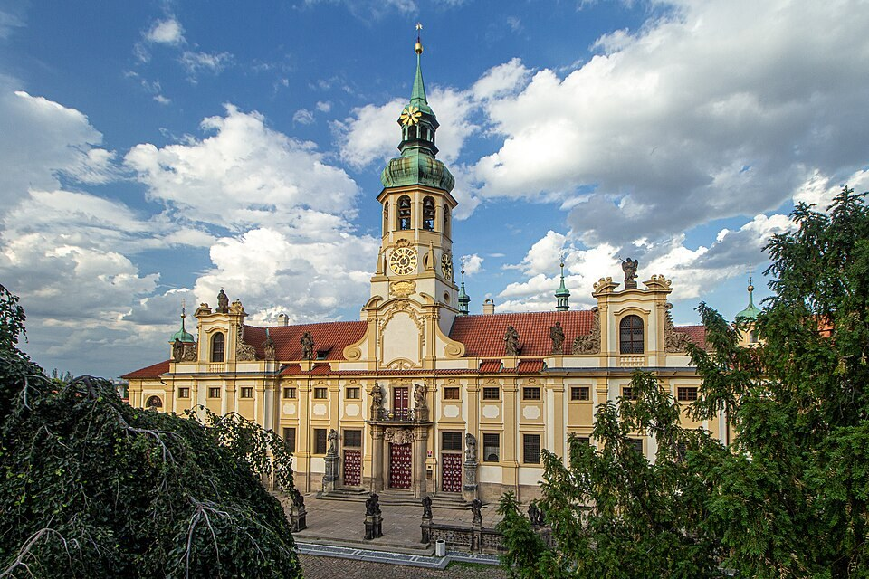

Prágai Loreta (Pražská Loreta)
A Loreta homlokzata előtt először a középtornyot és a kétoldalt elnyúló épületszárnyakat nézzük meg. A zárt együttes egy barokk zarándokhely gondosan szervezett világába hív. A bejárat mögött udvar, kápolnák és kerengő várja a látogatót. A városnézés során itt a látvány mellett a vallási utánzás és az emlékezés sajátos formájával is találkozunk.
Az udvar közepén álló Szent Ház az itáliai Loreto kegyhelyének mintáját követi. A hagyomány a názáreti Mária otthonához kapcsolja az eredeti szent házat. Prágában ennek másolata köré alakult ki a tizenhetedik századi zarándokközpont. Az építészeti másolat a távoli szent hely élményét hozta közelebb az ide érkező hívekhez.
Az alapításhoz Kateřina Benigna Lobkowicz neve kapcsolódik. A főúri támogatás és a barokk katolikus megújulás egymást erősítette a hely fejlődésében. A kerengő kápolnái és a templom különböző áhítati megállókat kínáltak. Séta közben érdemes megfigyelni, hogyan szervezi a látogatás ritmusát ez a körbejárható, udvar köré rendezett tér.
A Loreta harangjátéka a hely egyik legismertebb hangélménye. A torony huszonhét harangja dallamot is meg tud szólaltatni. Ha éppen halljuk a játékot, álljunk meg egy olyan ponton, ahol az udvar és a torony egyszerre látható. A hang ettől nem háttérzaj marad, hanem az épületegyüttes érzékelésének részévé válik.
A kincstár leghíresebb darabja a Prágai Nap nevű gyémántos monstrancia. Az aranyozott sugarak és a kövek együtt a fény tudatosan megsokszorozott hatását keltik. A tárgy eredetileg liturgikus célt szolgált, ezért nem pusztán udvari ékszerként érdemes szemlélni. A felajánlás, a hit és a művészi kézművesség ugyanabban az alkotásban találkozik.
A részletek megtekintése után térjünk vissza gondolatban a csendes udvarhoz. A barokk zarándokhely a gazdag látványt és az elmélyülés lehetőségét együtt kínálta. A város legsűrűbb útvonalaihoz képest itt más ritmusban haladhatunk. Érdemes ezt a nyugalmat továbbvinni a közeli Újvilág utca kisebb léptékű házai közé is.
50.089279, 14.391861